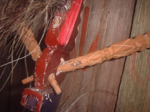

keleng 
/kɔlɔŋ/
v_rt.
“twist_around”
vt.
for someone (egkeleng, migkeleng/ingkeleng, agent, eg><ø-) to twist something (egkelengen, kelenga, theme, eg><en-) around, e.g., the top of a pen to twist it off, or to tune a kuglung by twisting the tuning peg
Ka egkeleng iyan ka pegtileng te minsan nekey eyew diyè egpakatangkè te warè din natangkei. Iyan man-e lein ne kaluwasan kayi ka peggihet te minsan nekey iling te tagkes te kuglung wey banggut/hiket naa.
Kelenga nu ka tagkes te kuglung su eyew egkatul-id.
Tune the two-stringed guitar kuglung. (Lit.Twist around the string of the two stringed guitar so that it will be in tune.)
Eng. twist around; rotate; tune kuglung; wring
Online dict status: -
Usage level: M
n.
(kelengan, -an) steering wheel
Eng. steering wheel
Online dict status: -
Usage level: M
vi.
for something (egkakeleng, nakeleng, actor, egkA><ø-) to become twisted around, e.g., the tuning peg of a kuglung if the peg is not a tight fit in the hole
Eng. twist; rotate
Online dict status: -
Usage level: M
vt.
for someone (egkeleng-keleng, eg><ø-rdpRT-) to twist something, e.g., one's head or a door knob (egkelkelengen, theme, eg><en-rdpCVC-) back and forth
Syn. lingì
Syn. lengey
Eng. twist back and forth
Tag. umilíng
Ceb. lingùlingò
Ilo.: agwingíwing
OCM: Gestures and Signs (201)
Online dict status: -
Usage level: M
Updated by: RJH,TME,RJH
Last updated: 24/Mar/2015
This page last updated: 03-Jan-2020
Copyright © 2009-2014, Matigsalug Language Christian Association, Inc